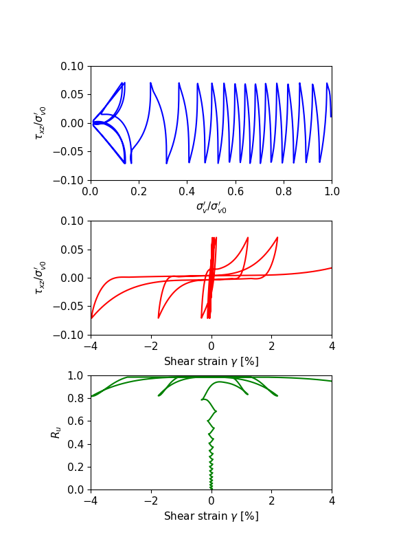
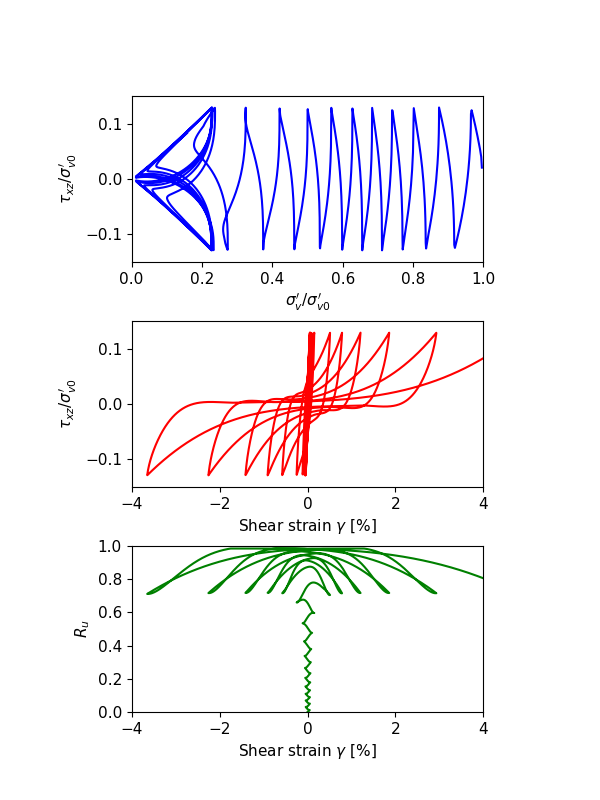
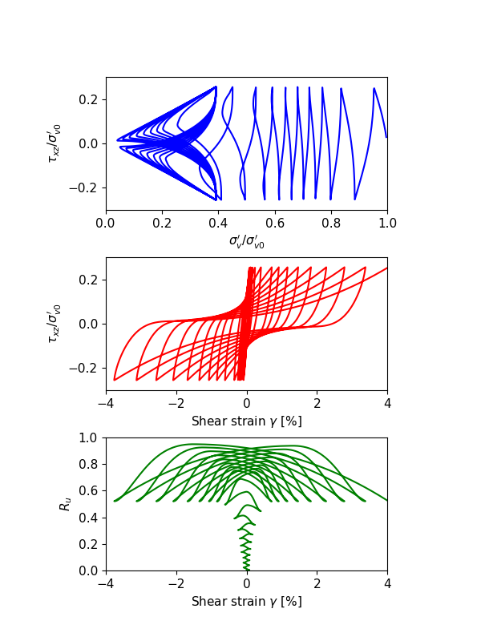
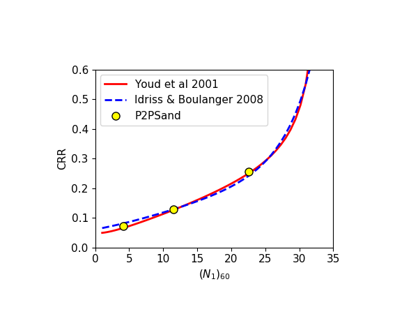

采用 P2PSand 模型的循环不排水 DSS 试验
注意
要在 FLAC3D 中查看此项目，请使用菜单命令 。选择“Dynamic/ CyclicUndrainedDirectSimpleShear”并选择“CyclicUndrainedDirectSimpleShear.prj”以加载。 所用主数据文件见本示例末尾（main data files）。其余数据文件可在项目中找到。
进行了不排水循环直剪（DSS）加载响应的单网格单元数值试验。 所有这些试验都从初始有效竖向应力（\(\sigma^{\prime}_{v0}\)）沿 z 轴为 100 kPa（约 1 atm）、 \(K_0=0.5\)、初始静剪应力为零的状态开始。 除初始相对密度不同外，所有参数均采用默认参数。 允许网格单元中的孔隙压力累积。 平面外（仅 y 轴）应变受到约束。 网格单元顶部的自由度被附着，使顶部所有网格点具有相同位移，以满足 DSS 条件。 网格单元顶部的网格点采用速度控制。 一旦剪应力（\(\tau\)）幅值达到某一值（\(CSR \times \sigma^{\prime}_{v0}\)）， 网格单元顶部网格点的速度即反向。 本示例中，参数研究通过基于 Python 的主文件进行。
相对密度为 \(D_r\) = 0.3、0.5 和 0.7 时不排水循环 DSS 加载响应的数值结果 示于 图 1（Figure 1）、 2 和 3， 分别代表相对松砂、中密砂和密砂。 各图中，上部子图绘制 \(\sigma^{\prime}_v/\sigma^{\prime}_{v0}\) 与 \(\tau_{xz}/\sigma^{\prime}_{v0}\) 的关系， 中部子图绘制 \(\sigma^{\prime}_v/\sigma^{\prime}_{v0}\) 与 \(\gamma\) 的关系，下部子图绘制 \(R_u\) 与 \(\gamma\) 的关系。 所有图示响应在约 15 个循环、对应 CSR 值时都达到约 \(\gamma = 3\%\)（S.A.）剪应变。 剪应力-剪应变响应表明，即使超孔隙压力比（\(R_u\)）达到 99%，剪应变仍继续发展。
对于 图 1（Figure 1） 所示相对松散的砂，剪应变在最初几个循环中增长到很小的值。 触及剪胀面后，剪应变急剧增大到约 3%，此时 \(\sigma^{\prime}_v\) 接近 0、\(R_u\) 接近 1， 而这仅仅是在又经过几个循环之后。对于 图 3（Figure 3） 所示相对密实的砂， 剪应变在几乎每个循环中都有增长，而不像相对松散的砂那样仅在最后几个循环中增长。 中密砂（图 2（Figure 2））呈现出符合预期的中间行为。


图 1：\(D_r\) = 0.3 时不排水循环 DSS 加载响应。


图 2：\(D_r\) = 0.5 时不排水循环 DSS 加载响应。


图 3：\(D_r\) = 0.7 时不排水循环 DSS 加载响应。
砂从松散到密实状态的模拟结果趋势与一般观察一致： 在其他条件相同时，越密实的砂 CSR 值越高。 随着相对密度增大，变形模式由液化流动转变为循环迁移。 松散砂的应力-应变滞回环包含平坦段，这一现象称为“中性相”， 此时变形过程中产生的剪切刚度很小；密砂的应力-应变滞回环没有零斜率段， 表明其抗剪能力显著更高。
将 P2PSand 模型的结果与 Youd 等（2001）以及 Idriss 和 Bounlanger（2008）的经验曲线在 图 4（Figure 4） 中进行了比较。 采用了 \((N_1)_{60} = 46D_r^2\) 的关系。


图 4：CRR 与 \((N_1)_{60}\) 的关系。
数据文件
CyclicUndrainedDirectSimpleShear.dat
model large-strain off model configure dynamic fluid model fluid active off zone dynamic active off program call 'input' [input_parameters] ; zone create brick size (1,1,1) ; 分配本构模型 zone cmodel assign p2psand ;;; 初始条件 zone initialize stress-zz [-Sv0] zone initialize stress-xx [-Sv0*K0] zone initialize stress-yy [-Sv0*K0] ;;; 材料参数 zone property density [rho_d] pressure-ref [Patm] factor-cut 0.01 ;;; 输入对应现场条件的等效 relative-density-initial zone property relative-density-initial [dr0] ;;; 或直接输入现场条件下的 (N1)60 ;zone property n-1-60 [46.0*dr0*dr0] ;;; 首次分配 p2psand 模型时， ;;; 应将初始应力作为属性输入 fish operator ini_stress(z, modelname) if zone.model(z) == modelname then local pp = zone.pp(z) zone.prop(z,'stress-xx-initial') = zone.stress.xx(z) + pp zone.prop(z,'stress-yy-initial') = zone.stress.yy(z) + pp zone.prop(z,'stress-zz-initial') = zone.stress.zz(z) + pp zone.prop(z,'stress-xy-initial') = zone.stress.xy(z) zone.prop(z,'stress-yz-initial') = zone.stress.yz(z) zone.prop(z,'stress-xz-initial') = zone.stress.xz(z) endif end [ini_stress(::zone.list, 'p2psand')] ;;; 分配水的本构模型 zone fluid cmodel assign isotropic zone fluid property porosity [poro] zone initialize fluid-density [dw] zone gridpoint initialize fluid-modulus 0.0 ;;; 边界条件 zone gridpoint fix velocity-y zone gridpoint fix velocity range position-z 0 zone attach gridpointid 4 to-gridpointid 8 snap off zone attach gridpointid 6 to-gridpointid 8 snap off zone attach gridpointid 7 to-gridpointid 8 snap off ;;; 施加条件 zone face apply stress-zz [-Sv0] range position-z 1.0 zone dynamic active on model dynamic time-total 0 zone gridpoint initialize fluid-modulus [Kw] zone gridpoint initialize fluid-tension -1e20 ; [global zptr1 = zone.find(1)] [global gptr1 = gp.near(1,1,1)] fish define ssx local pp1 = zone.pp(zptr1) global sxx = zone.stress.xx(zptr1) + pp1 global syy = zone.stress.yy(zptr1) + pp1 global szz = zone.stress.zz(zptr1) + pp1 global sxz = zone.stress.xz(zptr1) global rup = (p0 + (sxx+syy+szz)/3.0)/p0 global ssx = gp.disp.x(gptr1) end ; zone dynamic damping rayleigh 0.002 1 model dynamic timestep fix 4.0e-5 ; history interval 25 model history dynamic time-total fish history ssx fish history sxz fish history szz fish history rup ; zone gridpoint fix velocity-x [rate] range position-z 1 ; fish define toThisShearStrain if math.abs(ssx) < ssv tothisShearStrain = false else toThisShearStrain = true endif end ; fish define cyclic while_stepping if zone.stress.xz(zptr1) > csr*Sv0 then command zone gridpoint fix velocity-x [-rate] range position-z 1 endcommand else if zone.stress.xz(zptr1) < -csr*Sv0 then command zone gridpoint fix velocity-x [ rate] range position-z 1 endcommand endif end ; model solve dynamic time-total 2000 fish-halt toThisShearStrain history export '1' '2' '3' '4' '5' file [txtfile] truncate model save [savefile]
⇐ Shaking Table Test with Finn Model: Simulation of the Liquefaction of a Layer | Solving Dynamic Problems ⇒
| 这些内容对您有帮助吗？… | FLAC3D © 2019, Itasca | 原文更新于 2020 年 10 月 8 日 |
| 版权与免责声明 | ||